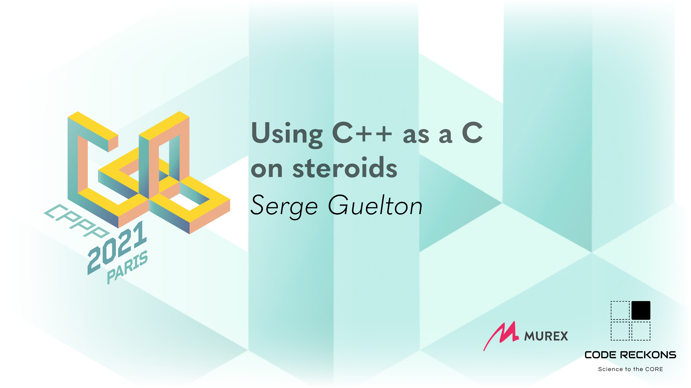

*this
Serge « sans paille » Guelton
(gdb) p me
$1 = {goblin_tinkerer = true, orcish_lumberjack = true,
monastery_swiftspear = true}Dad's Joke
C++ is exactly that:
increment C and return the old value
Abandon your ego
- No more runtime type information
- No more exceptions
- No more standard library runtime
- No more standard library headers (?)
Removing RTTI
-fno-rtti
- (almost) No more dynamic_cast<...>(...)
- No more typeid(...)
But keeps the type information needed for exceptions
Workaround
from libcxx
template <class _Tp> struct __unique_typeinfo { static constexpr int __id = 0; }; template <class _Tp> constexpr int __unique_typeinfo<_Tp>::__id; template <class _Tp> inline constexpr const void* __get_fallback_typeid() { return &__unique_typeinfo<remove_cv_t<remove_reference_t<_Tp>>>::__id; }
Removing Exception
-fno-exceptions
- No more exception throwing / catching
- Still register function unwinders
Workaround
from frozen
#if (defined(_MSC_VER) && !defined(_CPPUNWIND)) || \ (!defined(_MSC_VER) && !defined(__cpp_exceptions)) #include <cstdlib> #define FROZEN_THROW_OR_ABORT(_) std::abort() #else #include <stdexcept> #define FROZEN_THROW_OR_ABORT(err) throw err #endif
Removing the standard library runtime
s/g++/gcc as linker. Say goodbye to…
- non-header only types / functions
- some template functions that are explicitly instanciated
- language features that require library support
- default new / delete
- in-function static constructors
Placement new are still ok :-)
Workaround
void* operator new(size_t n) noexcept { return malloc(n); } void operator delete(void * p) noexcept { free(p); }
Remove (almost) all the things
-ffreestanding (See also: -mkernel)
A few allowed headers, including:
- <cstddef>, <limits>, <new>, <initializer_list>
- <type_traits>, <concepts>
Exceptions and typeid are still in!
- <exception>, <typeinfo>
And most surprisingly
- <coroutine>
What's left when you gave up everything?
A very Cool C language :-)
- constexpr
- template<...>
- auto
- range-based loops
- encapsulation, inheritance (including diamond!)
- stronger typing
Three tales
- GCC
- LLVM
- Numpy
GCC
https://gcc.gnu.org/codingconventions.html
> C++ is a complex language, and we strive to use it in a manner that is not surprising
- conversion
- overload
- operator
- default arguments
- <iostream>
- -no-rtti, -no-exceptions
LLVM
https://llvm.org/docs/CodingStandards.html
- no static constructors
- no generalized initialization syntax
- beware of copies whith auto
- -no-rtti, -no-exceptions
Numpy
PR#19713 (merged)
> Replace numpy custom generation engine by raw C++
- -no-rtti, -no-exceptions
- not linking with standard library
clang-tidy
- cppcoreguidelines
- llvm
Concluding words
It's okay to see C++ as a protean language
- Pick the feature you want
- Be aware of the dependencies between features
- Document or write tools to enforce your choice